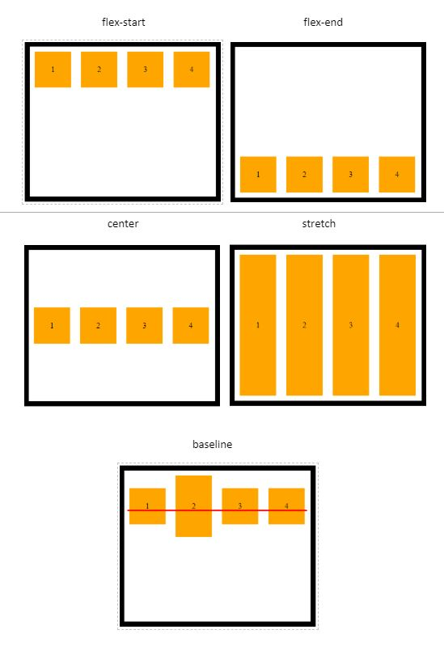

Flex Box, ¿qué es?
La maquetación web consiste en dar estructura y diseño a las páginas que forman un sitio en internet, durante muchos años se utilizaron variadas etiquetas y selectores para llevar a cabo funciones como lo son centrar o alinear un contenido sin embargo este trabajo en ocasiones era tedioso, la creciente cantidad de dispositivos móviles se creo una necesidad de maquetar de una forma más rápida y facil de comprender y por ello nació Flexbox que traduce diseño de caja flexible esta herramienta permite mediante css mejorar el diseño responsive y usar menos código en el posicionamiento de elementos en la página.
Estructura
La estructura de Flexbox se compone de contenedores padre e hijos (Contenedor-Flex y Elementos-Flex respectivamente)
- El Contenedor-Flex es nuestro contenedor padre, y es él quién va a contener a todos los elementos hijos a los cuáles queremos posicionar.
- El Elemento-Flex es nuestro elemento hijo, el cual utilizará todo el espacio disponible para ubicarse de acuerdo a las propiedades a las cuales este sometido junto a los demas Elementos-Flex contenidos.
Cada diseño flex esta compuesto por dos ejes:
- Un eje principal que define el posicionamiento horizontal de los Elementos-Flex.
- Un eje secundario que define el posicionamiento vertical de los Elementos-Flex.
El Contendor-Flex contiene direcciones que definen el origen y el fin del flujo de Elementos-Flex:
- Inicio principal
- Fin principal
- Inicio secundario
- Fin secundario
Cada Elemento-Flex está definido por sus dimensiones, anchura(tamaño principal) y altura(tamaño secundario) que dependen del eje principal y el eje secundario.
Propiedades
Si queremos utilizar las propiedades de Flexbox tendremos que definirlo mediante la propiedad display y su valor flex o inline-flex dentro del selector que nosotros definamos que es nuestro elemento padre o Contenedor-Flex.
.contenedor-padre {
display: flex
}
En este documento solo se describirán brevemente las propiedades más importantes del elemento padre
Flex-direction
Es la encargada de definir el eje principal y secundario de nuestros elementos hijos. Estos ejes como ya se mencionó pueden se verticales, formando columnas y horizontales formando filas.
.contenedor-padre {
display: flex
flex-direction: row | row-reverse | column | column-reverse ;
}

Flex-wrap
Por defecto flex, trata de disponer de los elementos en una misma línea, si no es el caso que necesitás, con flex-wrap podés ordenar los elementos en mas de una fila o columna.
.contenedor-padre {
display: flex
flex-wrap: nowrap | wrap | wrap-reverse ;
}
Justify-content
Cuando nombramos el eje principal de un elemento padre, es decir el eje horizontal, se destaca esta propiedad para dar direccionamiento a los elementos hijos.
.contenedor-padre {
display: flex
justify-content: stretch | flex-start | flex-end | center | space-between | space-around | space-evenly ;
}

Align-items
Al igual que justify-content esta propiedad te permite distribuir los elementos en un eje, pero esta vez en el eje vertical.
.contenedor-padre {
display: flex
align-items: flex-start | flex-end | center | stretch | baseline ;
}
Para finalizar hay que remarcar que dichas propiedades se pueden combinar unas con otras, definir contenedores padres con elementos hijos a los cuales también pueden definirse como padres que contienen hijos y así sucesivamente. Es por ello que Flexbox nos da un sin fin de posibilidades para crear disposiciones para los componentes de nuestras páginas web, de una manera sencilla y muy fácil de aprender.
Referencia
German Cabrera. Febrero de 2020. Flexbox - ¿Qué es y para qué sirve?. Recuperado de: https://somospnt.com/blog/148-flexbox-que-es-y-para-que-sirve
Listas HTML, ¿qué son?
Las listas en HTML nos permite crear conjuntos de elementos en forma de lista dentro de una página, todos los cuales irán precedidos, generalmente, por un guión o número.
Los tipos de listas en HTML son los siguientes:
- Listas ordenadas
- Listas desordenadas
- Listas de definiciones
Listas Ordenadas
Las listas en HTML ordenadas son aquellas que nos muestran los elementos de la lista en orden. Para representar el orden tendremos los elementos numerados. Es decir, cada uno de los elementos irá precedido de un número o letra que establezca su orden.
Ejemplo:
<ol><li>amarillo</li>
<li>azul</li>
<li>rojo</li>
<ol/>
Mostrará como resultado
1. Amarillo
1. Azul
1. Rojo
Listas Desordenadas
Las listas desordenadas en HTML nos sirven para mostrar los elementos sin ningún tipo de orden, simplemente precedidos por una viñeta que puede ser un punto o un cuadrado.
Ejemplo:
<ul><li>amarillo</li>
<li>azul</li>
<li>rojo</li>
<ul/>
Mostrará como resultado
- Amarillo
- Azul
- Rojo
Listas de Definiciones
Las listas en HTML de definiciones en HTML nos sirven para montar listas en las que tenemos la estructura valor y definición. Suelen ser listas para definir términos, como si fuese un diccionario, si bien pueden ser cualquier par valor-definición.
Ejemplo:
<dl><dt>Amarillo:</dt>
<dd>primer color de la bandera</dd>
<dt>Azul:</dt>
<dd>segundo color de la bandera</dd>
<dt>Rojo:</dt>
<dd>tercer color de la bandera</dd>
<dl/>
Mostrará como resultado
- Amarillo:
- primer color de la bandera
- Azul:
- segundo color de la bandera
- Rojo:
- tercer color de la bandera
Referencia
Victor Cuervo. Noviembre de 2017. Listas HTML. Recuperado de: http://www.manualweb.net/html/listas-html/
Enlaces HTML
Lo más importante de los documentos HTML son los enlaces. Ya que mediante los enlaces en HTML podemos comunicar una página con otra. De esta forma, enlazando documentos HTML podemos acabar tejiendo lo que es Internet.
Para crear un enlace en HTML utilizamos el elemento A con la siguiente sintaxis:
<a>Contenido del enlace</a>Pero solo con esto el enlace no tendrá mucha utilidad ya que el principal objetivo del enlace es enlazar a un destino. Para poder indicar el destino de un enlace utilizamos el atributo href. En valor del atributo href puede ser cualquier URL que represente un recurso. Es decir, una página, una parte de una página, una URL genérica, un archivo, etc.
<a href="ULR">Contenido del enlace</a>Ejemplo
<a href="http://www.google.com">Ir a Google</a><a href="http://www.nasa.gov">Ir a Nasa</a>
Referencia
Victor Cuervo. Julio de 2017. Enlaces HTML. Recuperado de: http://www.manualweb.net/html/enlaces-html/